姚國美醫學講義
出版者的话
邓铁涛教授审稿意见
伍炳彩教授审稿意见
姚国美先生讲义代前言
姚国美先生纪略
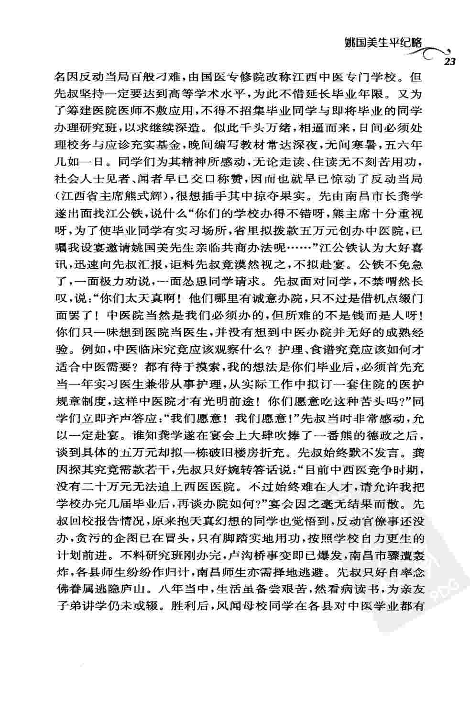 弁言
目录
太极生人论
人之阴阳从化滋长形骸合太极图说
十二经腑脏合八卦图说
五行生克
腑脏之盈虚消长以阴阳五行制化立说
经络起止
奇经部次
气血营卫
六经六气之标本从化
形骸部位之所属
六淫
七情
发热
恶寒
恶风
证像解
往来寒热
潮热
懊侬
烦躁
郑声
严语
盗汗
自汗
悸
怔忡
呃逆
喘
咳嗽
呕吐
哮
反胃
噎膈
郁
关格
嘈杂
吞酸吐酸
癥瘕
积聚
痞满
胸痺
臌涨
癃闭
疝
淋
遗逆与小便不禁
浊
瘛
眩晕
痉
筋惕肉润
麻木
痺
痿
阙
战栗
瘖
癇
癫狂
癍
麻疹
伤寒
论证
伤风
温病
署证
湿证
躁症
火证
头痛
瘟疫
霍乱
泻泄
痢
疟
黄疸
肿
脚气
中风
痰饮
肺痿肺痈
三消
气痛
腹痛
腰痛
遗精
失血
痨损
四诊总参目录
四診总义
望
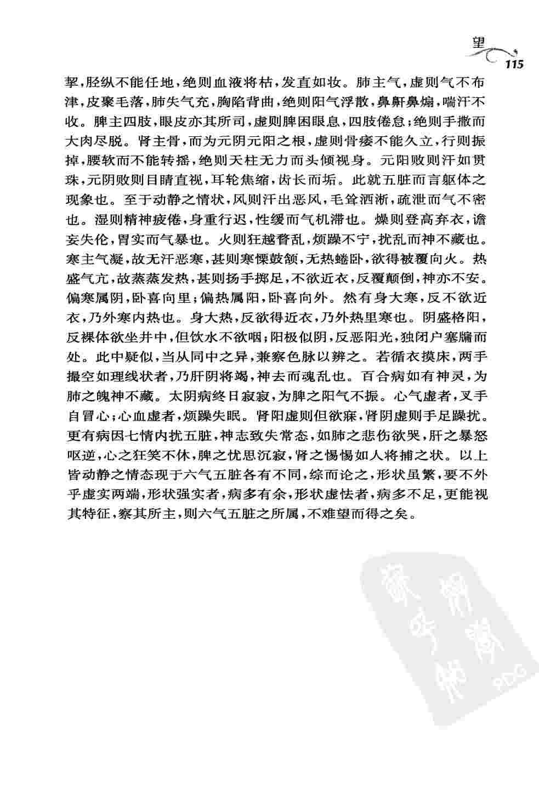 闻
问
切
诸脉提纲

脉证真假辩
治法八要
和法
清法
下法
吐法
消法
温法
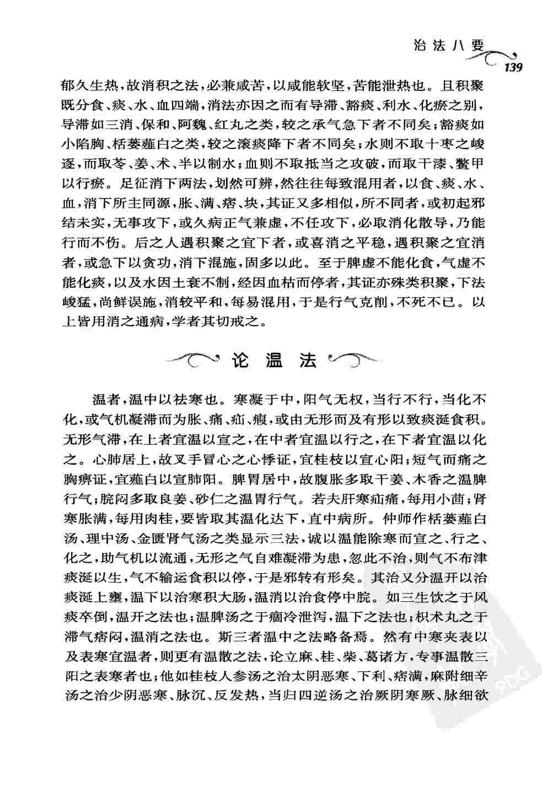 补法
治证概略
伤寒
伤风
热证
湿证
伤燥
火证
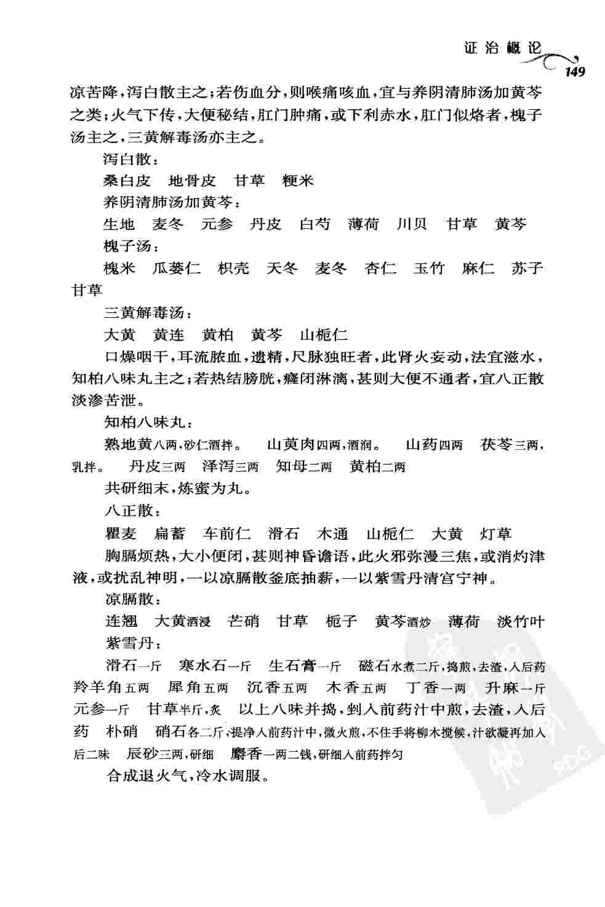 头痛
眩晕
中风
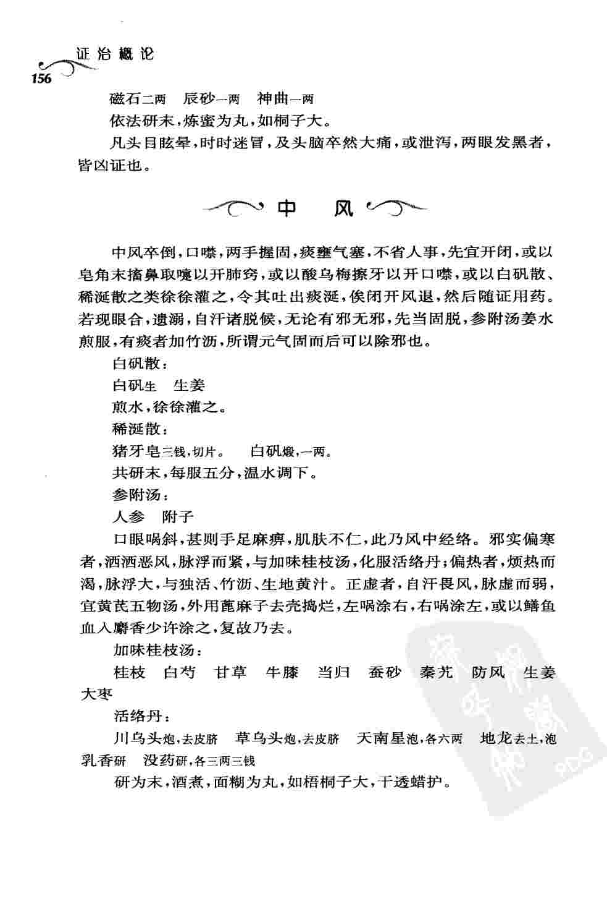 痫
麻木
胸痺结胸
气痛
腹痛
厥
悸
疝
温病
瘟疫
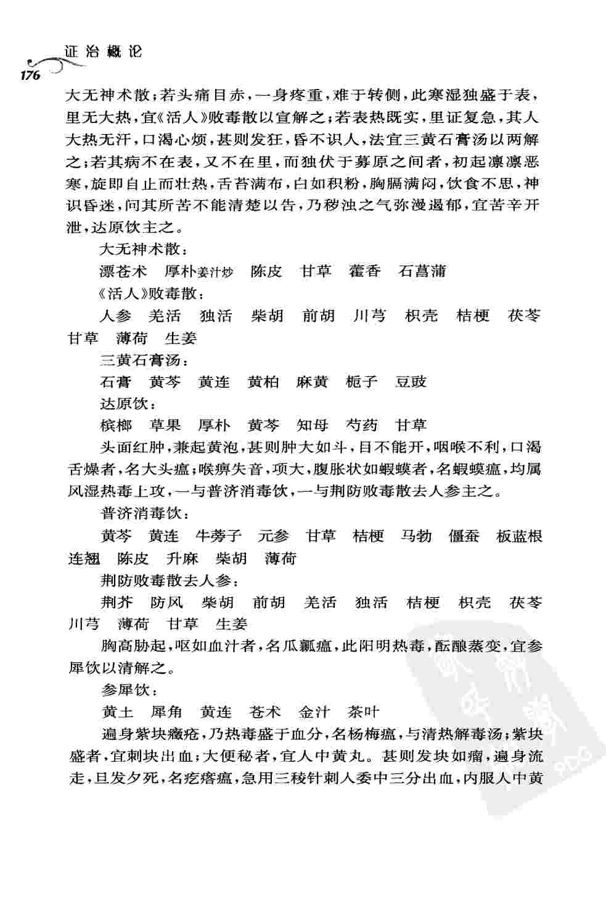 癍疹
署证
霍乱
疟疾
痢
泻泄
痰饮
肿
黄疸
痺
脚气
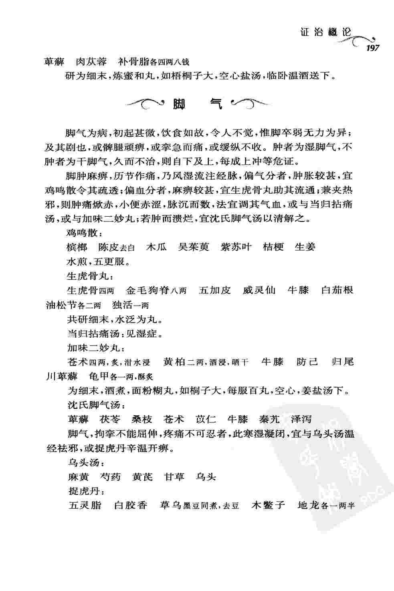 三消
便秘
痿
痉
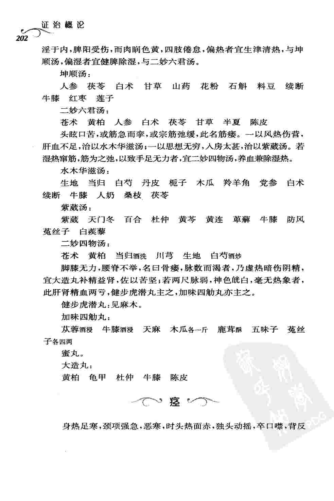懊侬
烦躁
癃闭
淋浊
失血
咳嗽
哮喘
瘖
肺痈肺痿
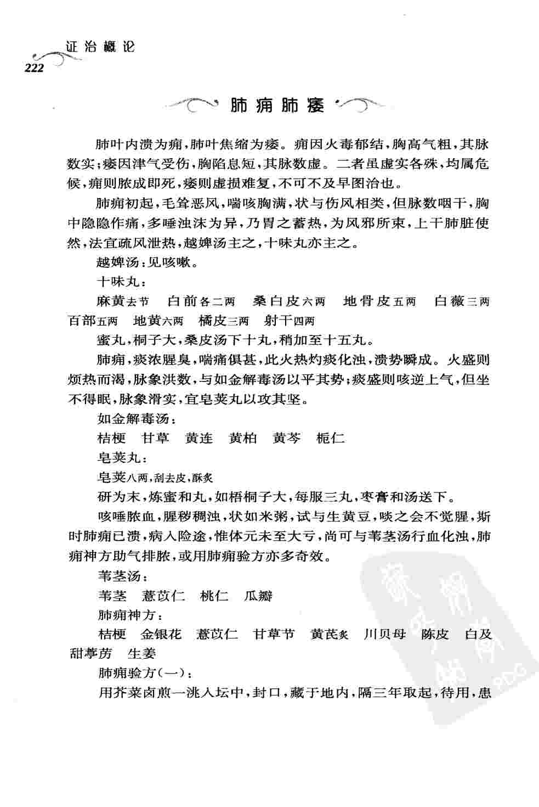 劳损
怔忡
自汗盗汗
癫狂
伤食
痞满
呕吐
呃逆
嘈杂
噎膈反胃
关格
腹胀
积聚
郁
吞酸吐酸
癥瘕痃癖
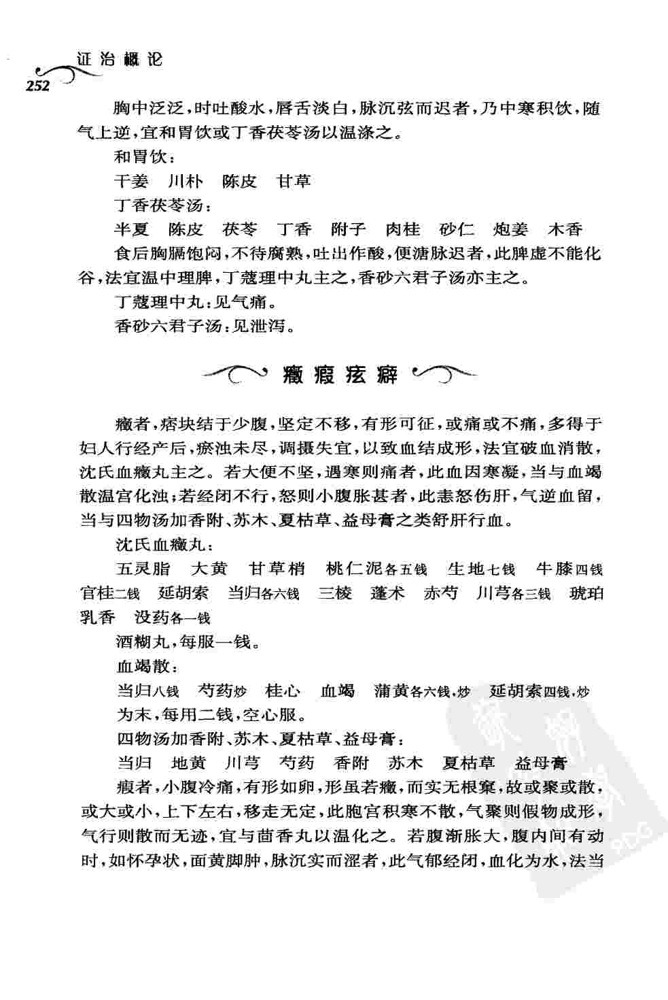 腰痛
遗溺与小便不禁
遗精


 奇经部次
奇经部次 头痛
头痛 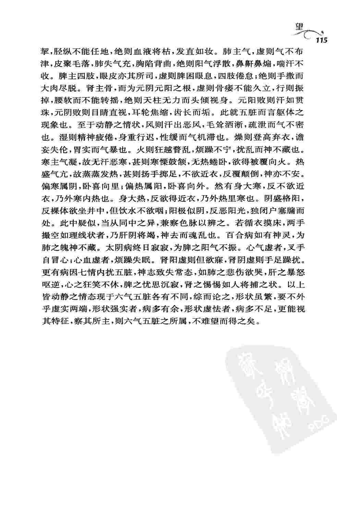
闻
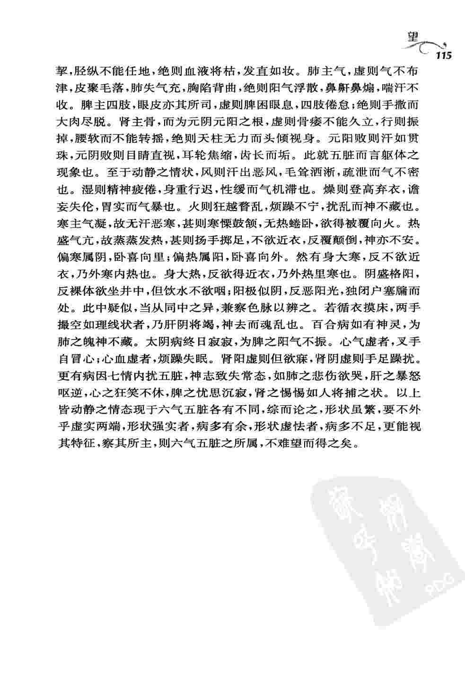
闻
 脉证真假辩
脉证真假辩 和法
和法 痢
痢 痉
痉 懊侬
懊侬 遗溺与小便不禁
遗溺与小便不禁 遗精
遗精